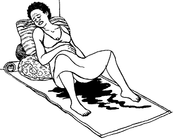

{% extends "templates.jinja/base.page-with-navbar.html" %}
{% block title %} Hesperian - Pregnancy & Birth{% endblock %}
{% block id %}Bleeding_Before_Placenta{% endblock %}
{% block content %}
Cómo tratar el sangrado antes de que salga la placenta

- Pídale a la madre que se ponga en cuclillas y trate de pujar para sacar la placenta.
- Pídale a la madre que orine. Una vejiga llena previene que el útero se contraiga.
- Coloque al bebé en el pecho de la madre para que amamante. Si el bebé no puede mamar, sobe los pezones de la madre. Esto ayudará a que el útero se contraiga y empuje la placenta fuera.
- Inyéctele 10 unidades de oxitocina en la nalga o el muslo, o déle 400 microgramos de misoprostol por la boca, 1 vez nada más.
Una mujer que está sangrando mucho está en peligro de entrar en choque. Revísela para ver si presenta señas de estar en choque.
{% endblock %}
{% block footer %}
{% endblock %}